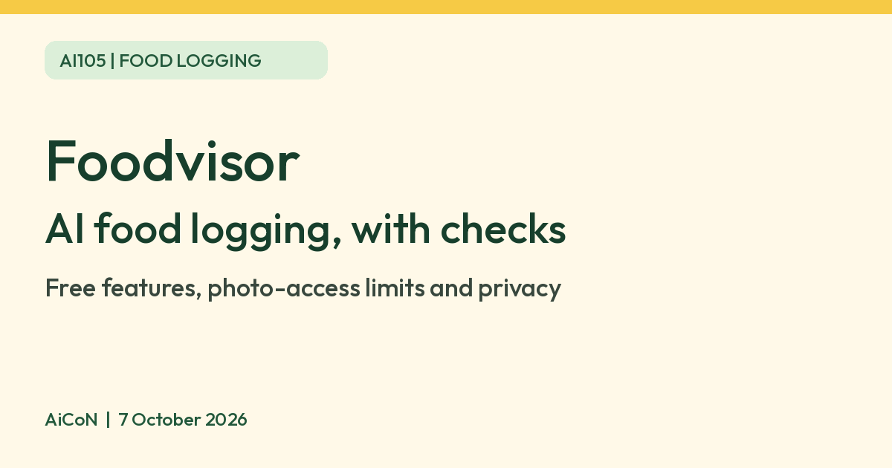

Foodvisor: AI food logging, with checks
Foodvisor uses AI to identify food in a meal photo and estimate its quantity and nutrition. It can make keeping a food diary easier, but its estimates are not medical advice or guaranteed measurements.

What Foodvisor does
Foodvisor's official website describes taking a photo of a plate to recognise food, estimate quantity and return nutritional information. The developer's current app listing also offers voice logging, text search, barcode scanning and saved favourite meals.
These are documented product features, not independently tested accuracy claims. We did not log a meal, compare estimates with weighed ingredients or assess recognition of regional recipes. This guide does not repeat the company's weight-loss statistics or promise a health result.
Free features are not the same as free AI photo scans
| Download | The India iPhone listing is free to download with in-app purchases. |
|---|---|
| Verified free tools | Current terms, Article 5.4.1, list manual food entry, barcode information, goal tracking, activity logging/sync and a limited recipe selection for all users. |
| AI photo allowance | The homepage documents photo recognition, but the free-feature section does not specify it. A current fixed free scan count or unlimited free photo access was not verified. Check the app's own offer before relying on this feature. |
| Premium | Additional content and coaching are paid. The developer's app listing includes full meal analysis, a personalised nutrition programme and other premium features. |
| Price | The terms say prices appear in local currency in the app or website and include applicable taxes. No single current India subscription price or free-trial entitlement was verified, so we do not quote an INR figure. |
| Renewal | Subscriptions can auto-renew. Check the billing period, trial conversion date and cancellation route for the platform used to buy. |
How to try it without assuming a paid commitment
- Start from the official Foodvisor website and its store links. The India App Store listing was verified; an Android listing is also public, but installation eligibility on an Indian Android account was not tested.
- Review the privacy policy and account questions. The service can collect profile and health-related details; give only what you are comfortable sharing.
- Inspect any onboarding offer before agreeing. Free download does not mean a selected subscription or trial has no future cost.
- Try a manual food entry or barcode lookup, which are explicitly listed as general free features.
- If photo logging is available within your chosen plan, take a clear photo and inspect the returned food and quantity estimates. Confirm access and price before accepting a paywall.
- Do not treat the output as a verified calorie measurement or use it to make a medical decision.
- Review Friends, sharing and health-sync settings before enabling them.
These are cautious editorial steps based on the official feature list and terms, not a tested screen-by-screen onboarding walkthrough.
Who should be cautious
Foodvisor's current terms restrict access to people aged 16 or older. They say the app does not provide medical advice, cannot replace a qualified healthcare professional and may not suit people with a history of eating disorders. They also explicitly disclaim guaranteed accuracy, completeness and improved health.
If you need dietary advice for a medical condition, use a qualified clinician or dietitian rather than an AI estimate. If food tracking becomes distressing, this may not be the right tool for you.
Privacy and sharing checks
The terms describe collecting account, demographic and health-related information. Uploading meal photos grants Foodvisor a non-exclusive worldwide licence to use and modify them for the stated duration. Review the policy before uploading photos with identifiable people or private surroundings.
The Friends feature can share a nutritional goal and weight-goal progress between mutually connected users. Adding a friend is a sharing choice, not merely a contact-list action. Check what becomes visible before accepting an invitation. Health sync is optional and governed by the permissions you authorise.
Do not put payment credentials or unrelated sensitive information into logging fields. This guide is not a privacy certification or an assessment of the app's technical security.
Frequently asked questions
Is the AI camera free?
A fixed current free AI-photo allowance was not verified. Free download and general free features do not prove unlimited camera access.
Is Foodvisor available in India?
The India iPhone listing resolved and Apple's India lookup returned the app. This is listing evidence, not a completed installation or proof of every regional feature. Android account eligibility was not tested.
Can it recognise every Indian dish?
Regional food recognition and portion accuracy were not tested. No claim about every dish or hidden ingredient is made here.
Does it replace a dietitian?
No. Foodvisor's own terms say it does not provide medical advice and cannot replace a qualified professional.
What is definitely free?
The current terms list manual entry, barcode information, goal/activity tracking and limited recipes as general free features. Extra content and coaching are premium.
Sources: Official website, India iPhone listing, Developer Android listing, Terms, updated 29 September 2026, Privacy policy, Official press resources. Checked 7 October 2026.